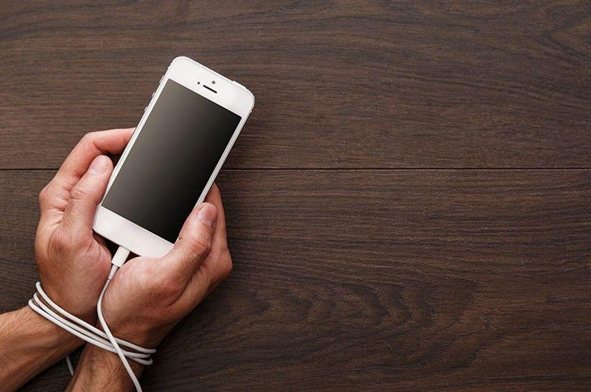

«Eγώ ήλθον διά να έχωσι ζωήν και να έχωσιν αυτήν εν αφθονία» (Ιωάννης 10:10)
Όπως είδαμε και στα δύο προηγούμενα αφιερώματά μας (Ιουλίου και Αυγούστου), υπάρχει πράγματι εθισμός και εξάρτηση από τα «έξυπνα», λεγόμενα, «κινητά τηλέφωνα» και το διαδίκτυο. Στο Ηνωμένο Βασίλειο, π.χ, η μέση ηλικία που τα παιδιά αποκτούν το προσωπικό τους κινητό είναι τα 7 χρόνια, ενώ παιδιά ηλικίας 13 ετών ήδη παρακολουθούν προγράμματα απεξάρτησης. Πρόσφατη έρευνα και στην Ελλάδα έχει δείξει ότι σε παιδιά ηλικίας 5-12 ετών το 78% χρησιμοποιεί το διαδίκτυο, ενώ το ποσοστό ανέρχεται στο 90% σε ηλικίες παιδιών 10-12 ετών. Εκτός όμως από την «υγιή και ισορροπημένη χρήση» του διαδικτύου και των κινητών, τα παιδιά (και οι ενήλικες) εθίζονται στη χρήση αυτών των μέσων, παίζουν παιχνίδια ως τα ξημερωματα, ζουν απομονωμένα, κλείνονται στον εαυτό τους, δεν έχουν φίλους και παρουσιάζουν ανασφάλεια και φοβίες.
«Όταν χρησιμοποιώ το κινητό μου νιώθω μία ευφορία. Και για αυτό το χρησιμοποιώ όσο περισσότερο μπορώ. Σπάνια δεν το έχω στο χέρι μου», σχολιάζει μία 18χρονη, για να δώσει άλλον έναν πόντο σε όσους υποστηρίζουν πως «τα smartphones μπορεί να αποδειχθούν το ναρκωτικό του 21ου αιώνα».
Υπάρχει άραγε τρόπος να ελέγξει κανείς πόσο υγιής είναι (ή δεν είναι) η σχέση του με το κινητό του; Οι ειδικοί της φημισμένης κλινικής Cleveland Clinic USA, συνιστούν να απαντήσετε στα εξής ερωτήματα:
Η ενασχόλησή με το κινητό σας έχει αρχίσει να επηρεάζει τη δουλειά σας ή σας εμποδίζει να συγκεντρωθείτε στα μαθήματα ή στις δουλειές σας;
Σκέφτεστε το κινητό σας ακόμα κι όταν δεν το χρησιμοποιείτε;
Αισθάνεστε ανυπόμονοι και οξύθυμοι όταν δεν κρατάτε το κινητό σας;
Ελέγχετε διαρκώς το κινητό σας και περισσότερη ώρα απ’ όσο θα θέλατε;
Έχουν αρχίσει τα μέλη της οικογένειάς σας να γκρινιάζουν ότι ασχολείστε υπερβολικά πολύ με το κινητό σας;
Αν απαντήσετε καταφατικά σε κάποια ή κάποιες από αυτές τις ερωτήσεις, είστε σε ζώνη κινδύνου και είναι απαραίτητο να λάβετε μέτρα για να περιορίσετε τη χρήση του κινητού σας. Πρέπει να τονίσουμε ότι η έγκαιρη λήψη μέτρων είναι πολύ αποτελεσματική. Μία βόλτα στην εξοχή, η συμμετοχή σε αγωνίσματα και η ευχάριστη συζήτηση με αγαπητά πρόσωπα, είναι απίστευτο το πόσο αποτελεσματικά είναι στο να μας ξεκολλήσουν από την εξάρτηση.
Όσον αφορά τη διερεύνηση του υποκείμενου μηχανισμού πολλές μελέτες έχουν δείξει ότι η ενασχόληση με το κινητό, μας προσφέρει ευχαρίστηση, καθώς συνδέεται άμεσα με το χημικό στοιχείο στον εγκέφαλο μας που ονομάζεται ντοπαμίνη, το «νευροδιαβιβαστή της ευχαρίστησης». Η ντοπαμίνη μπορεί πράγματι να απελευθερωθεί στον εγκέφαλό μας, κάθε φορά που βρίσκουμε μια νέα πληροφορία στο κινητό μας ή όταν κάποιος επικοινωνεί μαζί μας σε αυτό. Έτσι, δεν είναι περίεργο που όλοι θέλουμε να ασχολούμαστε με το smartphone μας και μάλιστα, πολύ. Εδώ πρέπει να τονίσουμε ότι ο ανθρώπινος εγκέφαλος είναι αναμφισβήτητα το πολυπλοκότερο όργανο του Σύμπαντος και γνωρίζουμε πολύ λίγα για αυτόν. Υπάρχει όμως Κάποιος που ξέρει τα πάντα και μας αγαπάει πραγματικά, ο τριαδικός Θεός !!!
Να επισημάνουμε ότι σχεδόν κάθε είδους εξάρτηση «αιχμαλωτίζει το θύμα της» με παρόμοιο τρόπο: Στον υποθάλαμο (μικρό τμήμα του εγκεφάλου) αλλά και διάσπαρτα μέσα στον εγκέφαλο, ευρίσκεται το σύστημα της ανταμοιβής και της τιμωρίας. Η διέγερση του κέντρου της τιμωρίας (ώστε να αποτραπεί μία εξάρτηση έχει μεν επίδραση στη συμπεριφορά μας αλλά αυτή είναι σύντομη και ασθενής. Πράγματι παρά τις ανατριχιαστικές φωτογραφίες στα πακέτα με τα τσιγάρα η κατανάλωσή τους μειώθηκε ελάχιστα. Αυτή είναι και η αιτία που οι προτροπές και οι παραινέσεις των γονέων και των δασκάλων μικρή επίδραση ασκούν στην απελευθέρωση του ατόμου. Το σύστημα της ανταμοιβής, με κύριο νευρομεταβιβαστή τη ντοπαμίνη έχει πολύ μεγαλύτερη επίδραση. Ο μόνος τρόπος απεξάρτησης αλλά και διαφύλαξης από την αιχμαλωσία είναι ένας. Να δοθεί στο άτομο ακόμη μεγαλύτερη αγάπη και χαρά και αυτή είναι η ΑΓΑΠΗ ΤΟΥ ΘΕΟΥ ΕΝ ΧΡΙΣΤΩ ΙΗΣΟΥ ΤΩ ΚΥΡΙΟΥ ΗΜΩΝ !!!
Αυτός, πιστεύουμε, είναι κυρίως ο λόγος που η πρώτη πασών των εντολών είναι: «Θέλεις αγαπά Κύριον τον Θεόν σου εξ όλης της καρδίας σου και εξ όλης της ψυχής σου και εξ όλης της διανοίας σου. Αύτη είναι πρώτη και μεγάλη εντολή.» Ματθ. 22:37). Για άλλη μία φορά θαυμάζουμε τη τελειότητα του Λόγου του Θεού. Όταν ο εσωτερικός μας άνθρωπος είναι γεμάτος με την αγάπη του Θεού, που είναι εγκεχυμένη εντός μας δια του Αγίου Πνεύματος, δεν υπάρχει χώρος και για κάτι άλλο. Έτσι όχι μόνο αποφεύγουμε την δια της επιθυμίας διαφθορά (Β΄Πέτρου1:3), αλλά και καθαιρούμε λογισμούς και οχυρώματα του εχθρού (Β΄Κορινθίους 10:3 ).
Γνωρίζουμε ότι έρχεται ένα πνευματικό τσουνάμι, ψέματος και διαφθοράς. Η κοινωνία είναι εντελώς ακάλυπτη. Η πραγματική όμως εκκλησία του Χριστού, η νύμφη του Αρνίου, είναι οπλισμένη και αγρυπνά. Απέναντι στα «σκουπίδια» του εχθρού, η εκκλησία θα υψώσει το Λόγο του Θεού.
«Όταν ο εχθρός επέλθη ως ποταμός, το πνεύμα του Κυρίου θέλει υψώσει σημαίαν εναντίον αυτού.» (Ησαίας 59:19)
ομάδα «Χριστιανισμός και Επιστήμη»
Published in the team's column in the newspaper “Christianity”, .